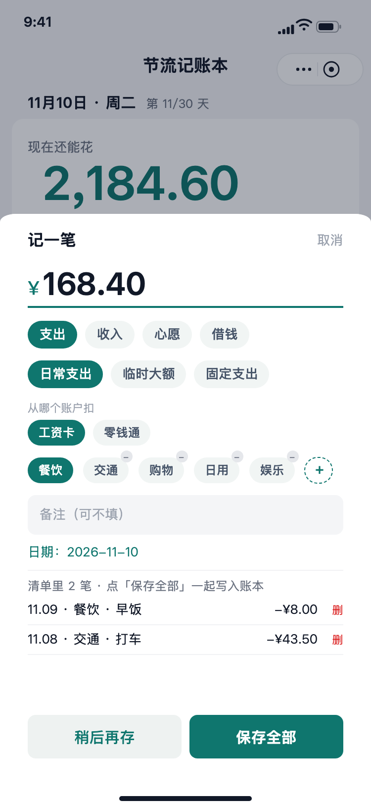
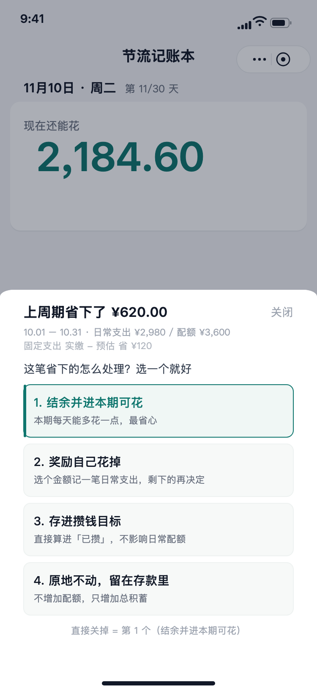

节流记账本
核心不是记录花了多少，而是告诉你今天还能花多少。
一句话说清这个项目
把记账工具从「事后记录」改成「事前约束」：用一条已发额度公式回答首页唯一的问题，再用周期结算把省下来的预算变成一个必须做的选择。需求、口径建模、开发、测试与发布由我一人完成，目前我自己每天拿它记真实账。
要解决的问题
月度预算只在月初和月末有用，中间任何一天，用户都不知道自己还能花多少；固定支出和大额开销混在一起，额度随时被打穿；省下来的钱去哪了，多数工具没有答案。
我的做法
按日发额度、固定支出与配额解耦、结余四选一。所有余额类数字共用一个出口，任何一处不许另造公式——这是整个项目最难、也最值钱的部分。
下面的内容按「为什么这么定」组织，界面截图只出现在方案一节。完整 11 张矢量界面稿放在附录，不在这里堆图。
用户真正卡在哪
我以自己为第一个用户：一个人、多个存款账户、每月固定支出（房租、宽带、话费）、有不按月发的收入、偶尔借钱给人或补记前几天的账。市面上常见的记账工具在这套真实场景里会露出三个问题。
一、记的是过去，不是现在
月底看报表，知道「上月餐饮花了多少」，但今天中午要不要点那杯咖啡，工具不回答。预算类工具通常给一个整月总额，月初宽松、月末紧张，跟实际生活节奏对不上。
二、固定支出和大额开销会污染日常额度
房租一交，月度额度瞬间见底，接下来二十天全是红的。季付、年付的账单更难处理：按自然月记，非缴费月是 0、缴费月是三个月总和，日均预算完全没有参考价值。
三、省下来的钱没有出口
周期结束显示「本月结余 ¥X」，然后呢？不处理，这个数字就只是一行记录。省钱的反馈断在这里，下一次周期用户没有动力继续。
解决什么，明确不做什么
目标
首页一个大数字回答「现在还能花」；周期结束时把结余变成可执行的动作；任何余额都能和真实银行卡对上。
验收方式
金额与银行卡能对上；同一个「余额」在首页、结算、统计、攒钱目标四处不打架；新用户第一次打开不报错；改一笔旧账后所有派生数字跟着变。
明确不做
- 不做多用户共享账本——它会打破现有的数据隔离方式，需要成员表、邀请、角色权限与冲突处理，风险是现有架构的数倍，单独立项评估。
- 不接银行自动同步、不做自动分类——先把口径做对，自动识别留到探索池。
- 不做自动计息——账户资料里的年化、起息日、期限只作记录，不进总积蓄。浮盈算不算攒钱，口径没定之前不写。
- 不把旅行模式、新手引导塞进第一版——需求按 Epic 分树排期，标注「待拍板」的不动工。
需求按 12 条 Epic 线管理，每条先写清「现状 / 为什么改 / 改法 / 回退」，口径逐条拍板后才开工。这套纪律是单人开发能持续改而不崩的前提。
六个定生死的口径
下面每条都写「备选 / 选择 / 代价」。产品设计的实际工作量在这里，不在画界面。
按日发额度，而不是按月给预算
固定支出与日常配额解耦
只动余额，不动配额
结余四选一，把省钱变成动作
期初快照是基准日，不是显示日期
唯一出口 + 读侧兼容
口径治理：把名词写死
建立了唯一名词口径表，避免同一个词在不同页面含义漂移。摘几条：
| 名词 | 统一口径 | 为什么 |
|---|---|---|
| 周期日常支出 | 本周期日常类流水合计，不含固定缴费 | 混算会让分类占比和柱状图误导 |
| 预算花超了 | 透支文案，不用「已经透支」 | 避免被理解成银行卡没钱 |
| 期初存款 | 不叫「上月结余」 | 它是快照基准，不是一笔流水 |
| 还要节省 ¥X | 心愿还差多少 | 和「现在还能花」区分开 |
主流程与三个关键界面
结余去向反写下期配额基数，主流程回到「按日发额度」，不是一次性报表。



怎么确认它是对的
账务正确性：拿真实银行卡对账
账不是演示数据，是我每天真在记的。余额对不上时不改界面，先查口径：未来日期的收入被提前算进「现在余额」、账户归属键不一致导致收支静默消失、期初快照基准日被误当成显示日期——这几类问题都是从对账里冒出来的，修完再补口径断言。
口径一致性：一处定义，多处复用
已发额度、结余、余额、攒钱目标进度各有唯一出口函数；自建无真机离线测试框架，覆盖配额、结转、结算、导出等核心口径。目前仍挂着 8 条未修失败，全是用例里写死 10 月导致的日期漂移，不是功能缺陷——面试问通过率，我按这个说，不说「全绿」。
真实使用驱动迭代
需求不是凭空列的功能清单，多数来自使用现场：指图说「这条缝里露出了首页卡片」、质疑「11.12 的钱凭什么标 10.31」、要求「一个保存按钮存完全部」。每条都留了根因和回退方案。
做对的和反复的
做对的
- 先定口径再动工。每个需求先写清现状、为什么改、改法、回退，避免改一处崩四处。
- 余额类数字唯一出口。同一个「余额」在周期末预估、截至今天、结转、攒钱目标四处含义不同，混用就一定对不上银行卡。
- 结构升级走读侧兼容，多次加表加字段都没有写迁移脚本，存量数据零改动。
- 发布动作单独授权。上传开发版本、部署云函数都涉及真实数据，不按「迭代惯例」自动执行。
反复 / 做错的
- 补账入口改了四版。双胶囊 → 第五个标签 → 删标签并入清单 → 合并保存 → 改按钮文案。根因是没先定「入口放哪、一次存几笔」就开工。
- 借出借入入口加了又删。台账页做完了，设置页入口后来被撤，现在这个页面没有 UI 入口。先做实现后定入口，返工。
- 把两个日期概念混在一格。「余额截至」显示的是今天，内部却写期初基准日，被当场质疑，修法是没碰过时间就绝不改写基准日。
- 字段填了保存不上。先怀疑前端，最后定位到云函数字段白名单没随代码部署。已写成铁律：改白名单必须重新部署。
如果继续做
第一优先不是加功能，是找 3–5 个非本人真实用一周，验证「按日发额度」这个假设是不是别人也买账；其次是修掉那 8 条过期的固定日期用例，改成相对日期；再补体验版与正式版的发布状态。功能池里还压着旅行模式、多人 AA、新手引导，都标着「待拍板」，没有验证之前不排期。
可核验材料
完整界面稿 · 11 张矢量 界面稿 PDF 本案例 PDF 素材源文件仓库
界面稿为矢量重绘，非截图；全部金额、日期、账户名均为演示样例数据。产品逻辑与文案按线上小程序还原，事实部分来自项目需求台账与仓库提交记录，可当场核对。
联系方式见简历。